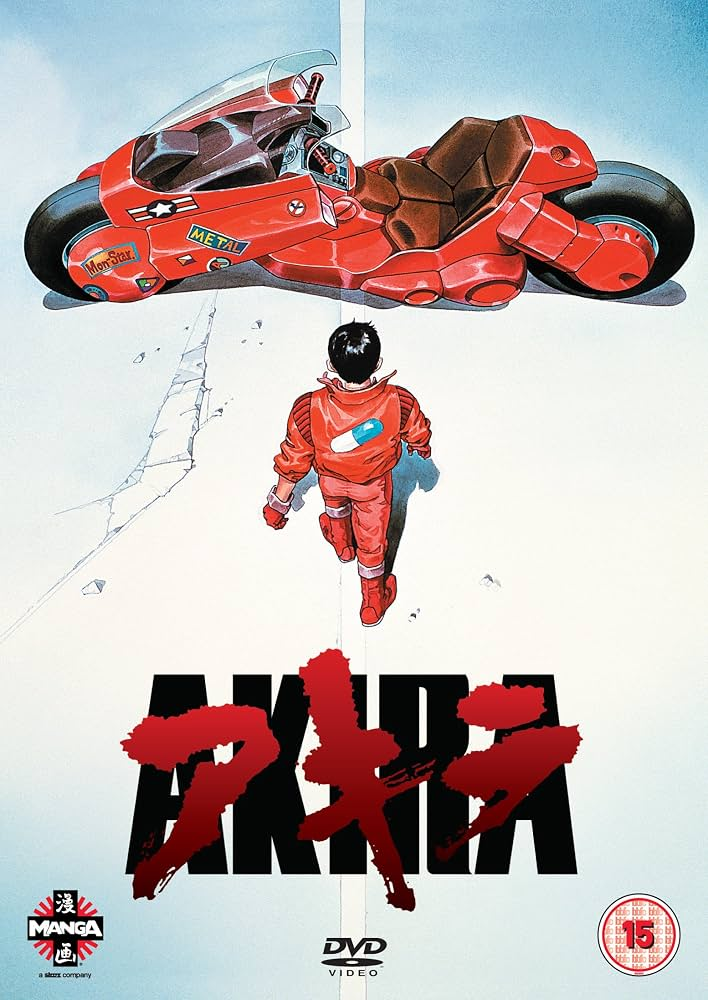

Identidad
Akira
Una identidad en movimiento
Crecer también significa dejar atrás algunas versiones de nosotros mismos.
«El poder cambia lo que creemos ser.»
Versiones de nosotros
Cada recuerdo reescribe un poco nuestra historia.
Ser también es transformarse.
Si cambiamos con el tiempo, ¿qué parte de nosotros permanece?